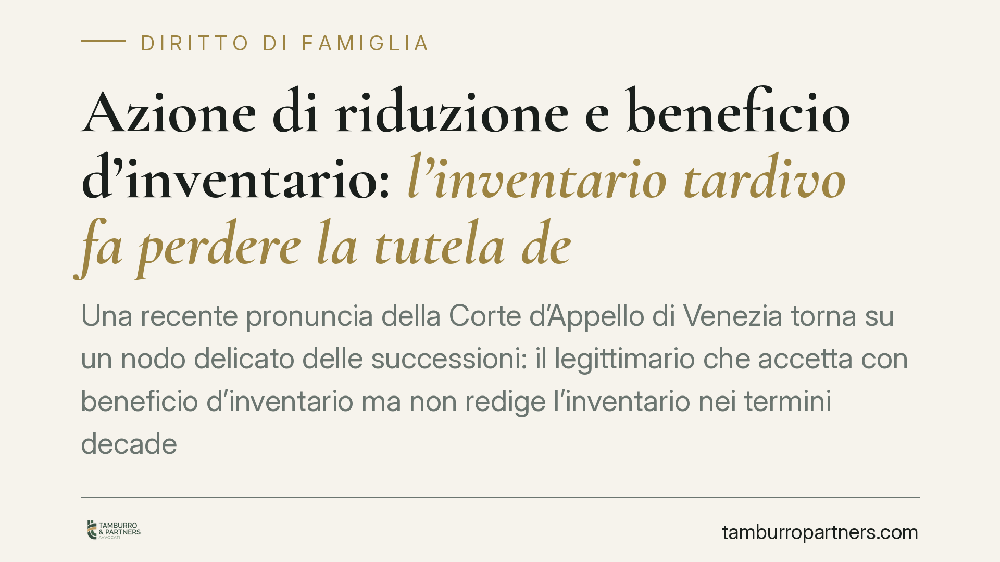

Azione di riduzione e beneficio d'inventario: l'inventario tardivo fa perdere la tutela del legittimario
Una recente pronuncia della Corte d'Appello di Venezia torna su un nodo delicato delle successioni: il legittimario che accetta con beneficio d'inventario ma non redige l'inventario nei termini decade dal beneficio, diventa erede puro e semplice e perde la legittimazione ad agire in riduzione contro donatari e legatari non coeredi. Un errore procedurale con conseguenze sostanziali.

Il caso
Un legittimario aveva accettato l'eredità con beneficio d'inventario, ma non aveva redatto l'inventario entro i termini di legge. Nonostante ciò, aveva agito in riduzione per recuperare la propria quota, contestando alcune attribuzioni patrimoniali ricevute da terzi non coeredi.
La Corte d'Appello di Venezia ha respinto la domanda. Il ragionamento è tecnico ma lineare: chi non completa l'inventario nei tempi previsti perde il beneficio e, con esso, un presupposto essenziale dell'azione di riduzione nei confronti dei terzi.
Inquadramento normativo
Occorre distinguere due piani, tra loro collegati.
Il primo riguarda la decadenza dal beneficio d'inventario. L'art. 487 c.c. stabilisce che il chiamato che ha dichiarato di accettare con beneficio d'inventario, ma non redige l'inventario nei termini di legge, è considerato erede puro e semplice. In altre parole, l'accettazione beneficiata si converte in accettazione ordinaria, con confusione tra patrimonio del defunto e patrimonio dell'erede.
Il secondo piano riguarda la condizione dell'azione di riduzione. L'art. 564 c.c. prevede che il legittimario, il quale non abbia accettato con beneficio d'inventario, non può chiedere la riduzione delle donazioni e dei legati verso i beneficiari che non siano anche coeredi. Il beneficio d'inventario è quindi un presupposto processuale per agire contro i terzi estranei alla comunione ereditaria.
Il collegamento tra le due norme è il cuore della decisione. La mancata redazione dell'inventario nei termini determina la decadenza dal beneficio (art. 487 c.c.); venuto meno il beneficio, viene meno anche il presupposto richiesto dall'art. 564 c.c. per agire in riduzione verso donatari e legatari non coeredi. La tutela non è persa perché il diritto del legittimario si estingue, ma perché manca la condizione formale per farlo valere contro quei soggetti.
Restano invece esclusi da questo limite i legittimari pretermessi, cioè coloro che sono stati completamente esclusi dalla successione. Chi è stato pretermesso non è chiamato all'eredità e non deve accettare con beneficio d'inventario: acquista la qualità di erede proprio attraverso l'azione di riduzione. La condizione dell'art. 564 c.c. opera dunque solo per il legittimario che sia anche chiamato all'eredità.
Donazioni indirette e dazioni di denaro
La pronuncia si sofferma anche sulla prova delle liberalità. Nei rapporti tra parenti, i trasferimenti di denaro o l'acquisto di beni intestati ad altri sono frequenti, ma non ogni attribuzione è una donazione.
Perché si configuri una donazione indiretta occorre la prova dell'animus donandi, cioè l'intenzione di arricchire il beneficiario senza corrispettivo. La dazione di denaro tra familiari, di per sé, è ambigua: può essere un prestito, un adempimento di obblighi morali, il rimborso di un debito. Chi intende includere quella somma nel calcolo della legittima deve dimostrarne la natura liberale con criteri rigorosi.
La distinzione ha conseguenze pratiche notevoli: solo le liberalità provate rientrano nella riunione fittizia utile a determinare la quota disponibile e quella riservata ai legittimari.
Implicazioni pratiche
Per chi si trova a gestire una successione, la decisione conferma che la forma dell'accettazione non è un adempimento burocratico secondario. Il legittimario che intenda tutelarsi verso terzi donatari deve accettare con beneficio d'inventario e completare l'inventario nei termini. Un passaggio omesso può precludere l'azione di riduzione proprio contro i soggetti che detengono i beni oggetto della pretesa.
Ricordiamo, per chiarezza, chi sono i legittimari: il coniuge, i figli e, in assenza di figli, gli ascendenti. A queste categorie la legge riserva una quota indisponibile del patrimonio.
Cosa fare in concreto
- Valutare la forma di accettazione: verificare se sussistono attribuzioni a terzi non coeredi che potrebbero rendere necessaria l'accettazione con beneficio d'inventario.
- Rispettare i termini dell'inventario: dopo la dichiarazione di accettazione beneficiata, redigere l'inventario entro i tempi di legge per non perdere il beneficio.
- Documentare le liberalità: raccogliere prove sulla natura delle dazioni di denaro e degli acquisti intestati a terzi, distinguendo prestiti, rimborsi e donazioni.
- Ricostruire l'asse ereditario: mappare donazioni dirette e indirette utili alla riunione fittizia per il calcolo della legittima.
- Verificare la propria posizione: accertare se si è legittimari chiamati o pretermessi, perché i presupposti dell'azione di riduzione cambiano.
È opportuno valutare con un professionista la forma di accettazione più adeguata al caso concreto, prima che i termini decorrano.
---
*Contributo informativo a cura di Tamburro & Partners - Avv. Giuseppe Tamburro. Non costituisce parere legale.*
Ogni famiglia ha il suo equilibrio.
Separazione, divorzio, affidamento, assegno: se vuoi un confronto riservato su una specifica situazione, scrivi allo studio. Ti rispondiamo entro un giorno lavorativo.